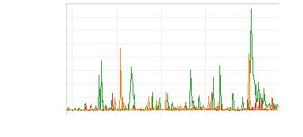
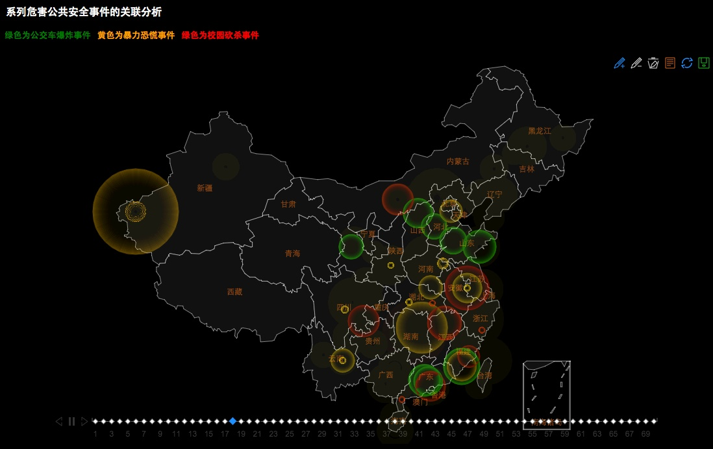
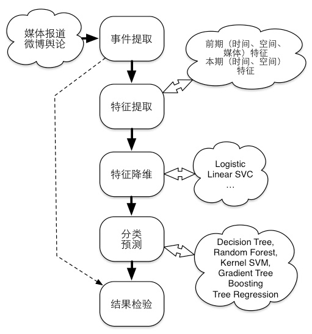

|



13年3月1日
13年6月1日
13年9月1日
13年12月1日
14年3月1日
日期
0
500
1000
1500
2000
2500
3000
3500
4000
报
道次数
图
16:
三类事件的媒体报道量随时间的变化趋势
图
17:
公共安全事件的数据可视化
4.3.1
事件预测整体思想
上节中我们通过关联分析的方法发现了同系列事
件在时间、空间、媒体三个维度的触发关系，以及不
同系列事件之间的共性。得到了一些结论与规律。总
结起来主要有以下规律：
(1)
某区域（省）内某类事件在当月是否发生以及
发生的次数与同类事件在该区域（省）或全国在前期
（近一个月内）是否发生与发生次数有较高的相关性，
通常相近的事件段，事件的发生具有一定关联性。
(2)
某区域（省）内某类事件在当月是否发生以及
发生次数与前期（近一个月内），同类事件在全国发生
的区域的分布相关，通常相近的区域事件的发生具有
相同的趋势。
(3)
某区域（省）内某类事件在当月是否发生以及
发生次数与前期（近一个月内）媒体对该类事件的报
道以及社会舆论有一定关系（诸如媒体大规模报道、
网民舆论传播带来的启发和情绪影响等）。
(4)
某区域（省）内某类事件在当月是否发生以及
发生次数与当月的时间特征相关，通常事件的发生按
年可能具有周期性，此外也可能与当月所涉及的重大
节日相关联，通常节日前后也是事件的高发期。
(5)
某区域（省）内某类事件在当月是否发生以及
发生次数与该区域（省）的空间地点特征相关，空间
地点特征包括：该类事件在本区域内过去发生的频率，
本区域的经济发展情况（通过GDP衡量）、人口数量、
民族组成等。
图
18:
预测整体框架
因此，根据前文的分析，可以将某类事件发生的
可能影响因素归为5大类：前期（t时间段内）时间（发
生频率，距离上一次发生的时长）因素，对应规律（1）；
前期空间（事件发生点的空间分布）因素，对应规律
（2）；前期媒体因素（媒体报道量，社会舆论情绪），对
应规律（3）；本期时间（月份、季节、是否包含重大
节日）因素，对应规律（4）；本期空间（本地过往该事
件发生的频率，经济水平，人口数量和民族组成）因
素，对应规律（5）。上述5个因素也可分为两大类（如
图??所示），即前期时间（Tt
1）、空间（St
1）、媒体
（Mt
1）因素、以及本期时间（TG）和空间（SG）因素。
4.3.2
特征提取
(1)
前期特征
对前一个月本区域的信息，从时间、空间、语义
（媒体）三个维度进行特征提取。
Tt
1:前期时间特征，包括：前∆t时间内，本区域
发生的事件数，全国发生的事件数，本区域前N个事件
距离本期起始点的时距，全国前N个事件距离本期起
始点的时距。
St
1:
前期空间特征，包括：前∆t时间内，事件发
生在全国（省/地区）的分布，分布包括绝对次数和占
比。
Mt
1:前期语义（媒体）特征，包括：前∆t时间内，
本地发生的各事件的媒体报道数、报道篇幅、报道媒
体的总数，微博中对该事件评论的总数，总人数，回
复数，转发数，点赞数，以及内容中包含正、负情感的
词数的占比等。
(2)
本期特征
TG:
本期时间特征，包括：预测期所对应的月份、
季节、是否包含重大节日，包含重大节日的数量等；
SG:
全局空间特征，历史上本区域发生该事件发
生的频率，本区域的经济水平（GDP指数，人均GDP指
数，GDP增幅），人口数量，及民族组成（少数民族占
比）等。
|